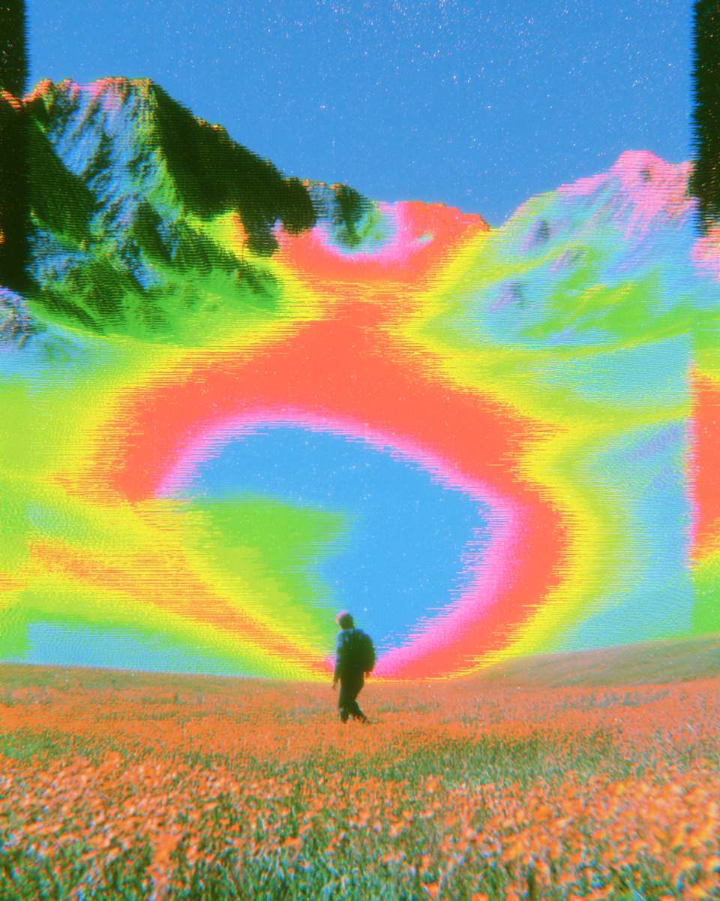
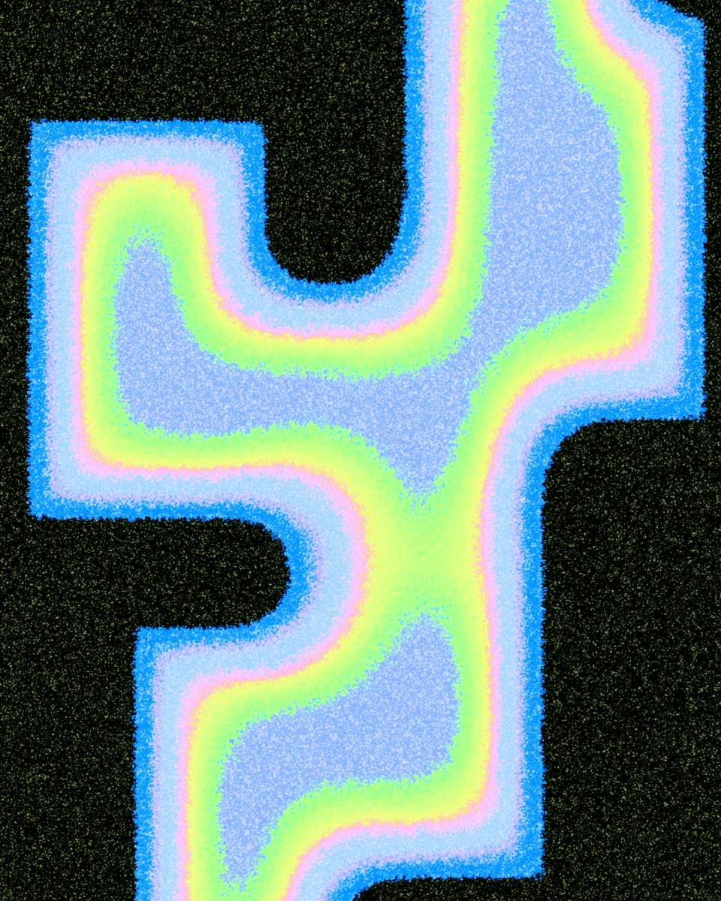
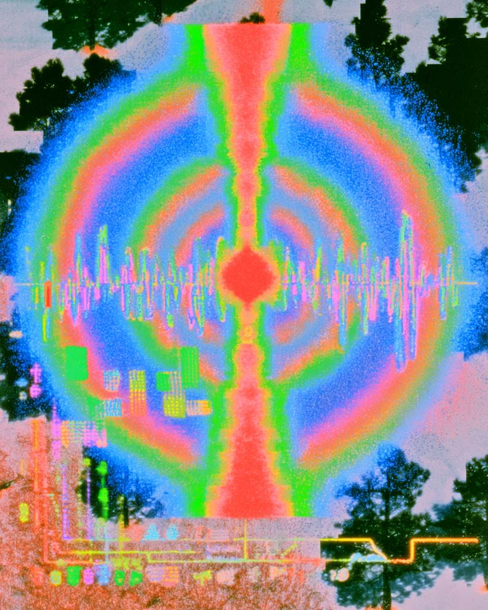
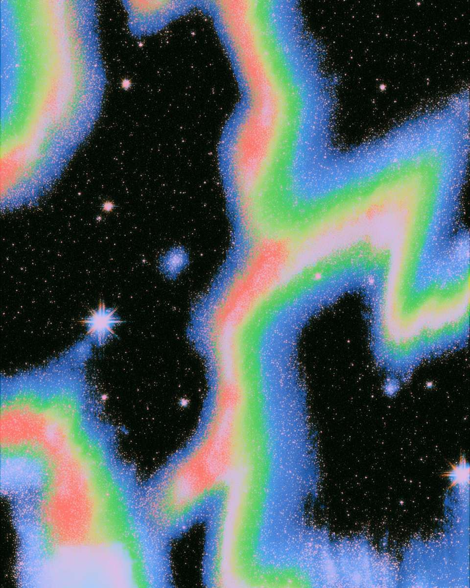
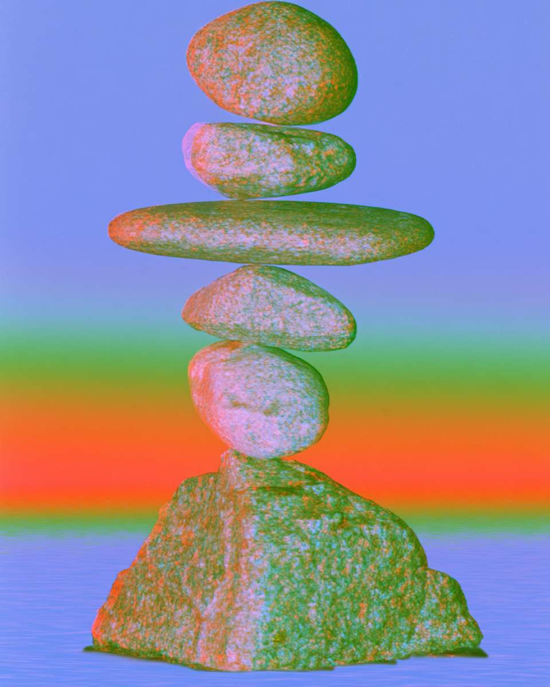
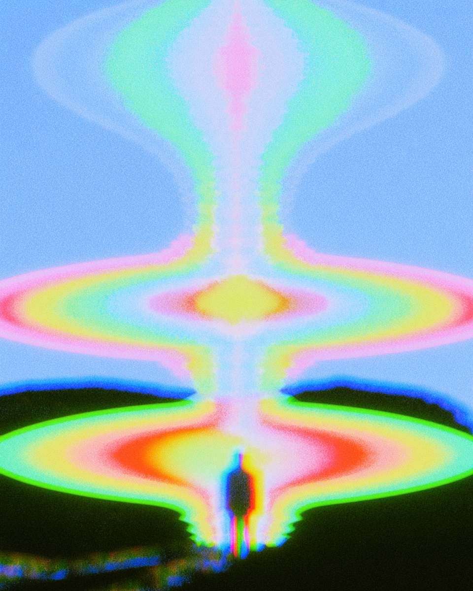

A practice map
This is a map, not a method. It describes the body, heart and mind as places to rest attention, so that you can find your own way.
Nothing here asks you to believe anything. Every claim is written to be tested against your own experience and let go of if it doesn't land.
No experience needed. Nothing to believe.

The map is not the territory.
An invitation
You could pause here, or keep reading.
Attention might rest with contact beneath you, the movement of breath, a feeling in the heart, a thought, or sound around you. Where attention goes is yours to choose.
Attention can be guided while experience is also allowed to come to you. You can adjust, move elsewhere or stop.
Body, heart and mind are not separate compartments. Distinguishing them can make certain qualities of experience easier to recognise.
Contact, breath and sensation can make ground and presence discoverable.
Feeling, goodness and relationship can make care and courage discoverable.
Thought and awareness can make spaciousness and possibility discoverable.
These are affinities, not promises or fixed boundaries. Ground, presence, care, courage, spaciousness and possibility may pervade the whole of experience.
The sensations of contact with the ground or the movement of breath may offer support. The breath can slow or deepen when that is helpful. Remembering goodness with the heart is another place attention can rest. Nothing here needs to be forced.
The movement
These are not opposite choices. Practice can include guiding attention and letting experience arrive at the same time. Their balance changes from moment to moment.
Gentleness and precision can be present in both effort and rest.
Gentleness in effort reduces the self-aggression that can turn practice into another demand.
Precision in effort lets experience be seen and attended to clearly.
Gentleness in rest allows the system to move through what it needs to. Rest is not forced.
Precision in rest sees clearly what can be let go of and what may still need to be met.
A sense of rigidity may suggest too much effort. Dullness, or being unpresent to the whole experience, may suggest too little. These are not failures; they are part of what can be noticed.
What may follow
Not a technique to perform, but something that may happen when experience is met without aggression and with enough clarity.

The body is always in contact with the present. It is a field of changing sensation with its own non-conceptual intelligence: grounded, immediate, already here.
But we rarely stay with it. We fix our attention elsewhere, often to avoid what feels uncomfortable, and lose awareness of that which is never anywhere but now.
Body scans and walking meditation. Allow your attention to fill the body, deepening your capacity to be with the pleasant, the unpleasant and the neutral alike.
Rest your attention. Let the body's natural sensitivity become a ground you relax into, and trust its intelligence to hold your life.
What may be discovered
Through the body, ground and presence may be recognised as available. They are not produced by the body, and they need not remain confined to it.

The heart is an organ of attunement. It resonates with our own experience, with others and with the wider world. It carries its own knowing: a reservoir of care, compassion and courage.
Its capacity to feel is endlessly deep, and because it is so deep, we often find our hearts closing to protect us from the fullness of it. Opening the heart is not done by force.
Loving-kindness. Deliberate warmth, turned toward yourself and then outward, until gentleness begins to feel natural rather than performed.
Begin in the body, then bring awareness to the heart and let its qualities respond on their own.
What may be discovered
Through the heart, care and courage may be recognised as available. The heart can cohere practice, tempering harshness and the urge to turn it into a goal.

The mind thinks. That is what it does. Usually we don't notice we're thinking; we're simply lost to it.
Our culture teaches us to meet a complex world through concept and abstraction, and that never quite satisfies, because the world is not a concept. It is an unfathomable, changing reality.
When you notice you've been thinking, note it, and return. Thought becomes one phenomenon among many, not reality itself.
Through body, then heart, then a recognition of the mind as naturally spacious. Let phenomena arise and pass by themselves.
What may be discovered
Through the mind, spaciousness and possibility may be recognised as available. Thought is part of experience, not a problem to overcome, and awareness need not be confined by it.

On the posture
Find the same balance in physical form: precision with gentleness.
Wakeful and at ease, at the same time.

The point of a map
A map is no use if you only ever read it. Body, heart and mind are yours to distinguish and let become porous again, in whatever order and rhythm experience asks for. Let your practice become a friend.
Ten to thirty minutes is plenty, and sitting regularly matters far more than sitting long. On a hard day, five minutes counts. When you lapse, as everyone does, simply begin again. Beginning again is not a failure. It is the practice.
Practice can help us discover what it does not manufacture.
Ground and presence, care and courage, spaciousness and possibility can be explored as discoverable qualities of experience.
Practising with someone
Practising in a group is its own thing. That happens over at Beings Club.